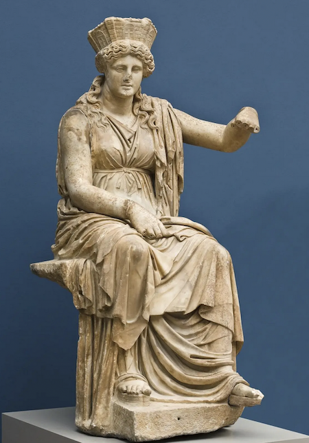

According to the Theogony of Hesiod, they were the twelve children of the Primordial parents Uranus and Gaia. The Titans were the former gods: the
generation of gods preceding the Olympians. They were overthrown as part of the
Greek succession myth, which tells how Cronus seized power from his father Uranus and ruled the cosmos with his
fellow Titans before being in turn defeated and replaced as the ruling pantheon of gods by Zeus and the Olympians in a ten-year war called "the Titanomachy". As the Titans were the
banished gods, who were no longer part of the upper world, they dwelt underground in Tartarus, and as such, they
may have been thought of as "gods of the underworld".
Passages in a section of the Iliad called the Deception of Zeus suggest the possibility that Homer knew of a
tradition in which Oceanus and Tethys (rather than Uranus and Gaia, as in Hesiod) were the parents of the Titans.
Plato, in his Timaeus, provides a genealogy (probably Orphic) which perhaps reflected an attempt to reconcile this
apparent divergence between Homer and Hesiod, with Uranus and Gaia as the parents of Oceanus and Tethys, and
Oceanus and Tethys as the parents of Cronus and Rhea "and all that go with them", plus Phorcys.
Cronus
- Other Name(s): Kronos
- Roman Name: Saturn
After seizing power, Cronus married his sister Rhea and, for a while, everything seemed all but perfect. However, at some point, Cronus violently and dramatically changed his ways. Fearing rebellion, he imprisoned both the Cyclopes and the Hecatoncheires in Tartarus and set the dragoness Campe to guard them. Alarmed by a prophecy saying that he would be overthrown by one of his children, he started swallowing them all, one by one. Eventually deposed from the throne, Cronus either escaped to Latium (modern Lazio) or was imprisoned in Tartarus with the rest of the Titans. In time, he was promoted to be the ruler of the Islands of the Blessed, a heaven-like abode, where the souls of only the greatest heroes lived after their earthly deaths.
Rhea

- Roman Name: Ops
Rhea raised another one of her grandsons, Dionysus, after the fiery death of his mother, the mortal princess Semele. Later on she went on to heal Dionysus' raging madness, which had been inflicted on him by the jealous Hera, causing him to wander around aimlessly for some time. According to Bacchylides, it was Rhea herself who restored Pelops to life after his father Tantalus cut him down.